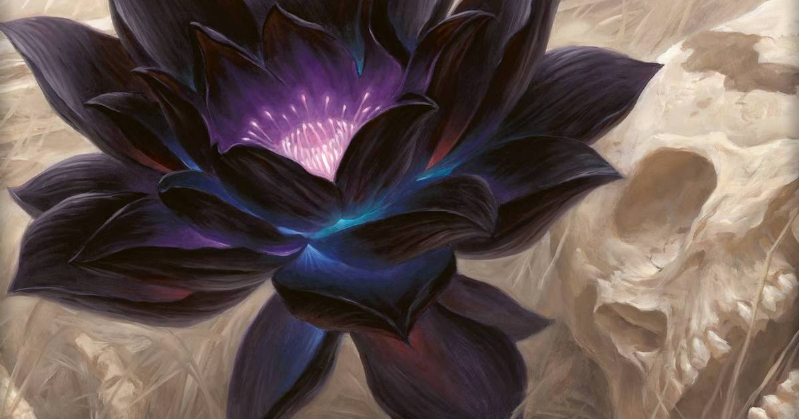

Magic is bringing back the Black Lotus — nerfed, underwater, and limited to about 500 copies
Wizards of the Coast revealed Abyssal Lotus, the headliner chase card of Nauctis: The Sunken Realm — a nerfed Black Lotus that costs nothing, taps for three mana of any color, and only works if you have eight permanents in your graveyard. The special gold-trim version: roughly 500 copies, Collector Boosters only.

The card
The most famous card in Magic: The Gathering history is coming back — with a catch, and a depth charge.
Wizards of the Coast revealed Abyssal Lotus at MagicCon Atlanta, the headliner chase card of Nauctis: The Sunken Realm, the first set of 2027 (releasing February 5, with prerelease on January 29). It's a nerfed Black Lotus: a 0-cost artifact that exiles itself to add three mana of any one color — but it enters tapped, and it only works if you have eight or more permanent cards in your graveyard (the set's new Descend 8 mechanic).
The original Black Lotus, from Alpha in 1993, taps for three mana of any color with no restrictions at all — and it has never had an official tournament-legal reprint since Unlimited in 1993, which is why real copies sell for tens to hundreds of thousands of dollars. The Abyssal Lotus keeps the dream alive at a fraction of the power: the same three mana, the same zero cost, but gated behind a graveyard you have to work for, and it comes in tapped.
The set
Nauctis is an underwater plane — Merfolk, seals, sharks, and a Whale God named Salinae the Ocean Mother — and it's the first set with official "god packs" under a new booster framework. The Abyssal Lotus comes in two showcase treatments: a Coral Frame version and a textless, gold-trim headliner that appears only in Collector Boosters, with roughly 500 copies of that special treatment in existence. Wizards also previewed 19 cards at MagicCon, including Ring of Unity (artifacts tap for two colorless) and a Crucible of Worlds reprint. One quirk of the plane: there's no Flying in the set.
Five hundred copies of the gold-trim headliner. One nerfed Lotus. A lot of people are about to spend a lot of money on Collector Boosters.
Sources
• Magic: The Gathering's Black Lotus nerf headlines Nauctis: The Sunken Realm (GameRant)
• Magic: The Gathering introduces nerfed Black Lotus card in upcoming underwater set (Infinite Start)